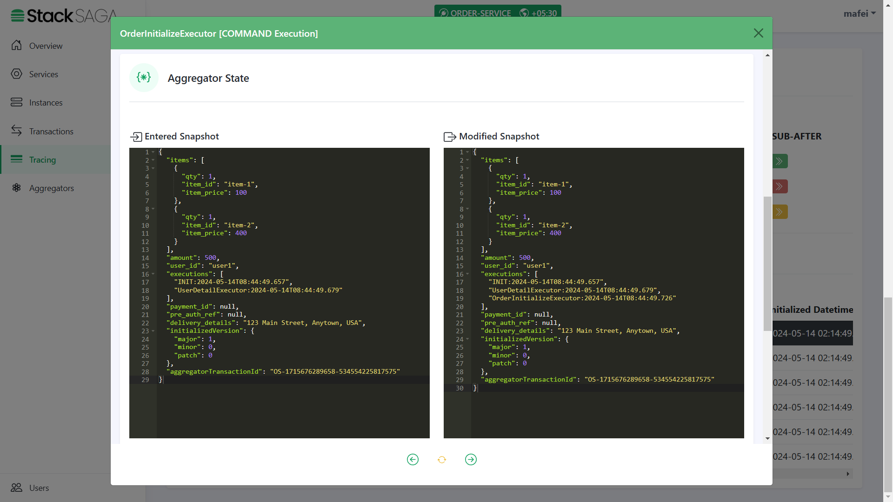
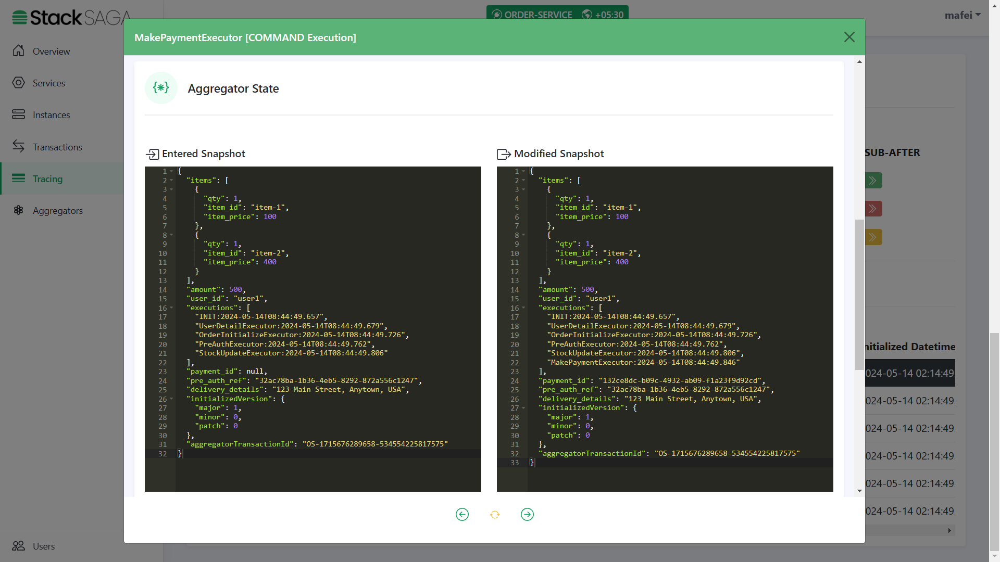
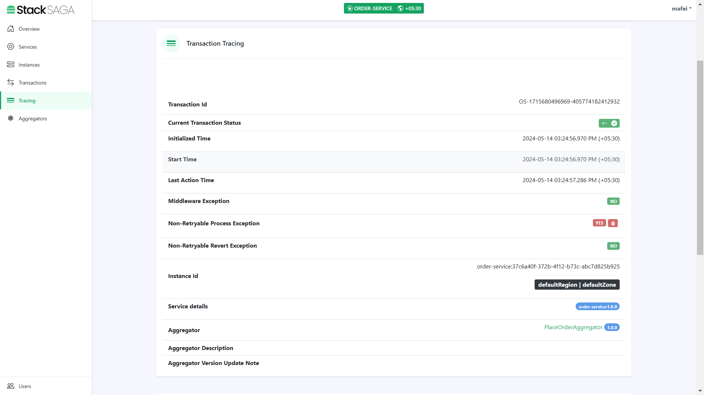
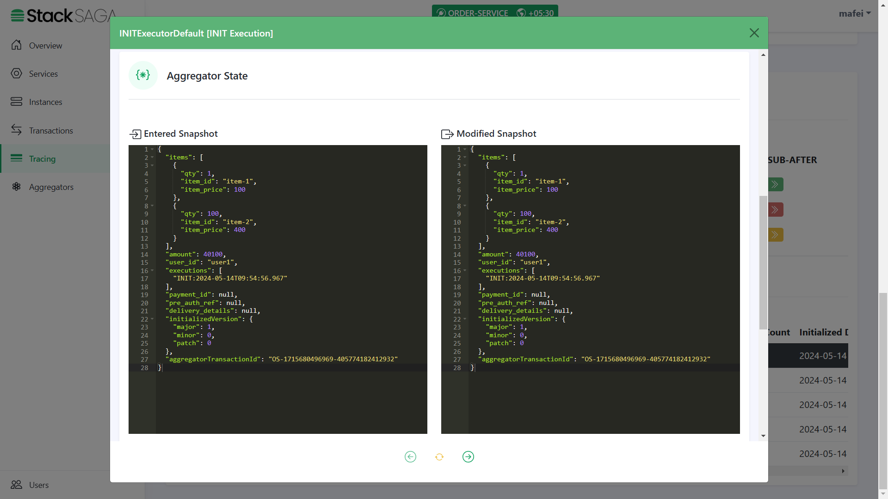
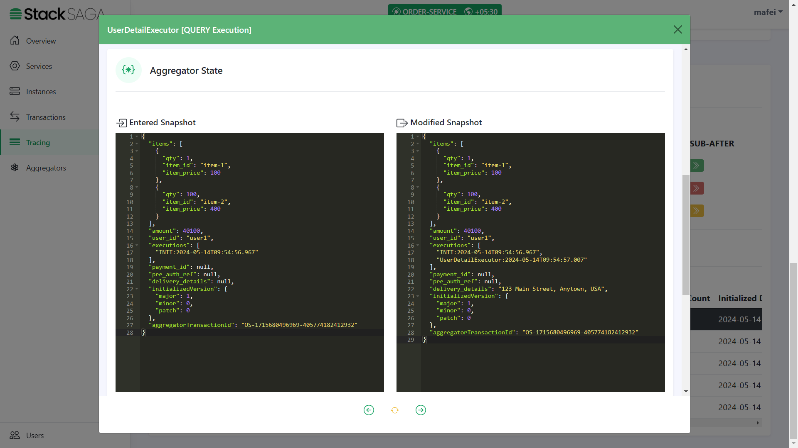
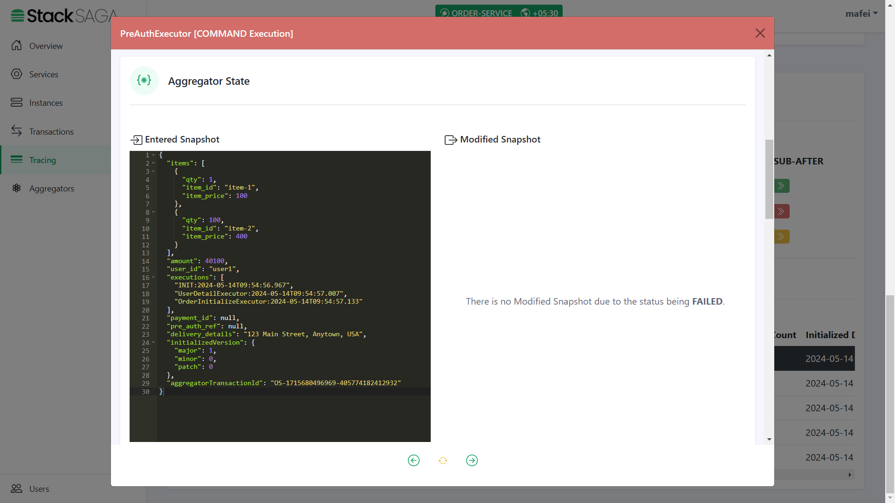
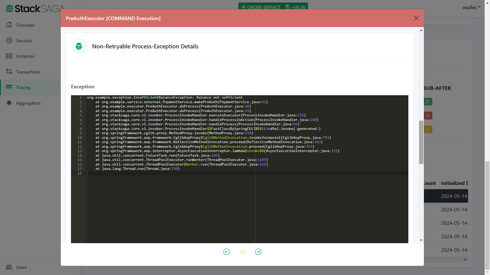
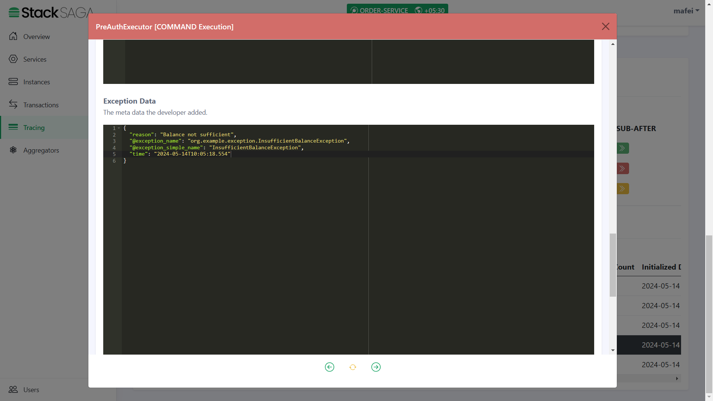
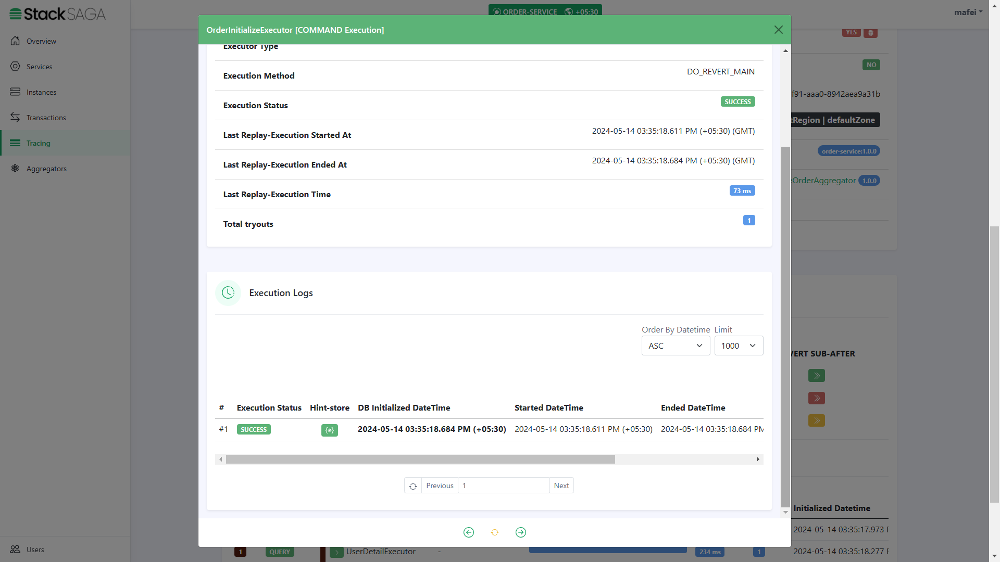
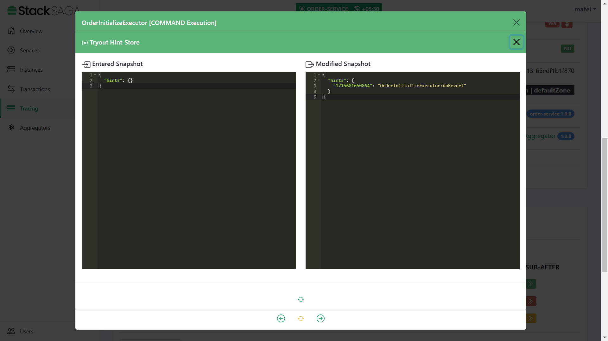

Testing
| After running all the services, if you want to test all the endpoints, go and test your endpoints here with your Postman. |
Let’s make a request for placing an order.
The place order process testing is done in three ways.
| Even though we are simulating Revert failed transaction in this demo, Make sure not to happen a Compensating failure. |
Fully successful transaction Testing
Let’s see by making a request that can be fulfilled the entire process successfully.
The user1 has enough money in his wallet. And also the stocks are available, and all the utility services are working well. So our request’s all primary executions should be successful as we expect.
You can see here as we expected, the transaction has been invoked through all the executors successfully.

After making the request, you will have a response like below.
You can see the order_id has been created successfully.
Now let’s move to the admin dashboard and see the trace of the transaction.
Go to the tracing menu and find your transaction tracing data by providing the transaction id that stacksaga generated.
)
If you didn’t test your order-service connectivity through the Service Connector window, make sure to go and validate your connectivity by providing target root URL and service-name (Or Aliased name).
|

Highlights
-
In this section, you can see all the things regarding the transaction like transaction data,current status, whether it has some exception or not., what is the instance that transaction was executed, region and zone etc.

Highlights
-
In this section, you can see all the executors that were executed one by one. Ant the time they were executed, and how long each executor has spent to execute.
By clicking each executor, you will be able to see each executor in detail like how the aggregator updated and how many times the executor was executed, etc.

Highlights
-
Any transaction in StackSaga has initial executor details, and it shows the initial state of the aggregator. (If the executor is INIExecutorDefault one all the time, the entered aggregator snapshot and modified aggregator snapshot are the same).
-
We can see the initial data that we updated from the OrderController class. And the rest of the data will be updated on the next executors. In addition to that, there are two properties called
aggregatorTransactionIdandinitializedVersion. You know theaggregatorTransactionIdis updated after handing over the execution to the SEC. TheinitializedVersionis provided what was the version of the aggregator (The version that you mention at@SagaAggregatorin your Custom Aggregator) when the transaction is started. This will help to make the decisions when update your aggregator in the feature. See Aggregator Casting ]
As we navigated in the controller, the next executor should be UserDetailExecutor.

Highlights
-
The entered aggregator state is the one that came to the executor after the last execution. Therefore, the
delivery_detailsisnullandexecutionslist has only one data. And on the right side, you can see the modified aggregator state after executing theUserDetailExecutor. There you can see thedelivery_detailswas updated, and the name of the executor was added to theexecutionslist (The 2nd one) due to the UserDetailExecutor has been executed successfully.
As we navigated in the UserDetailExecutor, the next executor should be OrderInitializeExecutor.

Highlights
-
The entered state of the aggregator is equal to the modified aggregator state of the last executor called
UserDetailExecutor. And after executing theOrderInitializeExecutor, the name of the executor was added to theexecutionslist (The 3rd one).
As we navigated in the OrderInitializeExecutor, the next executor should be PreAuthExecutor.

Highlights
-
The entered state of the aggregator is equal to the modified aggregator state of the last executor called
OrderInitializeExecutor. And after successfully executing thePreAuthExecutoryou can see that thepre_auth_refwas updated at the modified aggregator state. And the name of the executor was added to theexecutionslist (The 4th one)
As we navigated in the PreAuthExecutor, the next executor should be StockUpdateExecutor.

-
The entered state of the aggregator is equal to the modified aggregator state of the last executor called
PreAuthExecutor. And after successfully executing theStockUpdateExecutoryou can see that the name of the executor was added to theexecutionslist (The 5th one).
As we navigated in the StockUpdateExecutor, the next executor should be MakePaymentExecutor.

-
The entered state of the aggregator is equal to the modified aggregator state of the last executor called
StockUpdateExecutor. And after successfully executing theMakePaymentExecutoryou can see that thepayment_idwas updated. And name of the executor was added to theexecutionslist (The 6th one).
Revert Success Transaction
Let’s look at such a scenario one of primary executions is fielded with non-retryable exception.
You can remember that in the PreAuthExecutor we caught the FORBIDDEN exception that sends by the payment-service
if the user’s wallet has no balance to make the pre-auth.
In this testing, let’s place an order with a higher amount than the wallet has.











